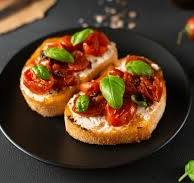

Ingredients
- 1 loaf Italian bread
- 4 ripe tomatoes, diced
- 1/4 cup fresh basil leaves, chopped
- 2 cloves garlic, minced
- 1/4 cup extra virgin olive oil
- Salt and pepper to taste
- 1 tablespoon balsamic vinegar (optional)
Instructions
- Preheat the oven to 400°F (200°C).
- Slice the Italian bread into 1/2-inch thick slices and place them on a baking sheet.
- Toast the bread slices in the oven for 5-7 minutes, or until they are golden brown.
- In a bowl, combine the diced tomatoes, chopped basil, minced garlic, and olive oil. Mix well.
- Add salt and pepper to taste. If desired, stir in balsamic vinegar for extra flavor.
- Top each toasted bread slice with the tomato mixture.
- Serve immediately, garnished with extra basil if desired.
Nutritional Information
Calories: 120 per serving
Protein: 3g
Carbohydrates: 15g
Fat: 6g